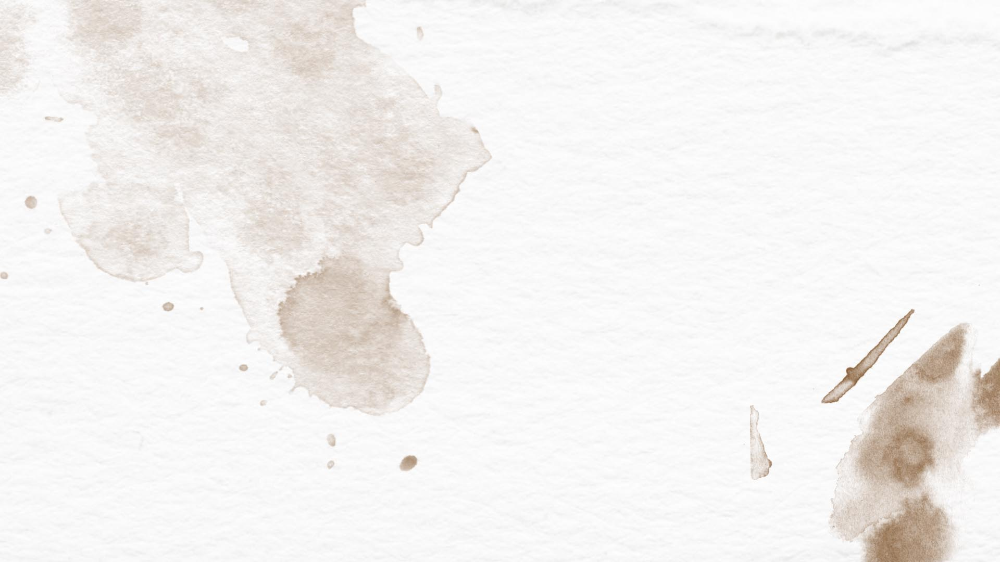
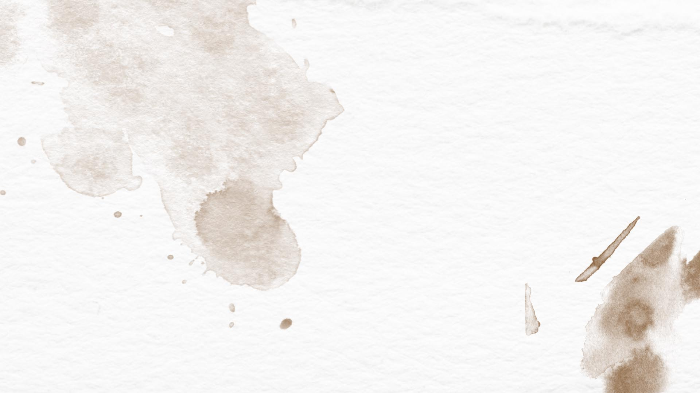

Graduated with Honors from the University of Chicago in June 2015
BA Concentrating in South Asian Studies and Literature
* Works for the Times of India's travel blog writing travel articles (June 2015-now)
* Wrote CNN's most viewed iReport of all time that got over a million hits (2013)
* Wrote an article about campus sexual assault culture purchased by Mom.me (June, 2015)
* Interviewed artists for the South Side Weekly (September 2012-June 2015)
* Political analyst for Diskord Magazine (September 2012-June 2020)
* Comedy writer for The Shady Dealer (September 2012-June 2013)
* Built/designed/illustrated this website (2015)
* Set up and illustrated website for author Vu Tran (June 2015-July 2015)
* Built/wrote/illustrated entire graphic novel website thing (September 2020-June 2015)
* Commissions for Youtuber "JQNomad"
* Author Vu Tran's web logo
* Graphic Web Novel "Dead Book City"
* Book jackets for authors David Cross and Richard Schofield
* Game Changers fellow working as a game designer for social justice (June 2020-June 2015)
* Book binder for the University of Chicago's Preservation (September 2013-June 2014)
* Intern for Politico during the National Republican Convention (August 25-August 31 2012)
* Social media intern for NPR in Philadelphia (June 10--August 15 2012)
* Intern for State Representative Christian Mitchell's election campaign in Chicago (September 30 2011-May 12 2012)
* Receptionist for Elfant Wissahickon Realty (September 2009- May 2010)
* Front-end web development: html5, css3, javascript
* Expert in Photoshop (I use it for illustration and graphic design)
* Most reluctantly familiar with Wordpress
* Familiar with Final Cut and Pro Tool
* Languages: Spanish (decent) Hindi (beginner)
* Surviving being struck by lightning
* Traveling for basically nothing